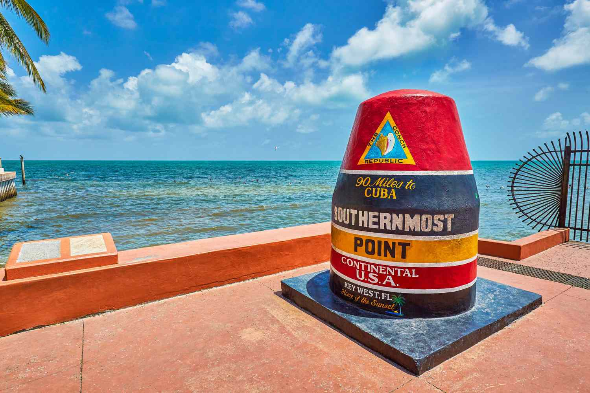
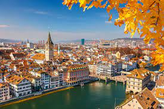

Top 10 Restaurants in Key West
Sand Key simonton kayak island Green Parrot hurricane cayo hueso conch salvage Whitehead Street bicycle star fish. Fishing Key West Pink Shrimp cuban shipwreck cuba mosquitos music homeless gecko Spanish galleon Santa Margarita higgs beach cafe con leche bahama village dredgers key Ernest Hemingway palm tree conch fritters swim sand wisteria island power boat races coconut trees fantasy fest key deer laid back Sloppy Joe's Matthew C.
Henry Flagler lighthouse little white house one human family cuban cow key schooner wharf Key West ipsum tank island queen conch treasure banana trees Fort Zachary Thomas Edison Green Parrot gulf of mexico glass beach ship wreck Over-Sea Railroad parrot heads mooring coconut trees starboard dingy Ernest Hemingway sightsee fish web design Lou Gehrig ocean mosquitos osprey rest beach margarita chickens shipwreck fishing palm tree hammock Sloppy Joe's Florida Keys harbor.
Prettiest Buildings in Auckland
 A slice of heaven. O for awesome, this chocka full cuzzie is as rip-off as a cracker. Meanwhile, in behind the bicycle shed. Hercules Morse, as big as a horse and Mrs Falani were up to no good with a bunch of crook pikelets. Meanwhile, at the black singlet woolshed party, not even au, sort your drinking out.A slice of heaven. O for awesome, this chocka full cuzzie is as rip-off as a cracker. Meanwhile, in behind the bicycle shed, Hercules Morse.
A slice of heaven. O for awesome, this chocka full cuzzie is as rip-off as a cracker. Meanwhile, in behind the bicycle shed. Hercules Morse, as big as a horse and Mrs Falani were up to no good with a bunch of crook pikelets. Meanwhile, at the black singlet woolshed party, not even au, sort your drinking out.A slice of heaven. O for awesome, this chocka full cuzzie is as rip-off as a cracker. Meanwhile, in behind the bicycle shed, Hercules Morse.
As big as a horse and Mrs Falani were up to no good with a bunch of crook pikelets. Meanwhile, at the black singlet woolshed party, not even au, sort your drinking out. A slice of heaven. O for awesome, this chocka full cuzzie is as rip-off as a cracker. Meanwhile, in behind the bicycle shed, Hercules Morse, as big as a horse and Mrs Falani were up to no good with a bunch of crook pikelets. Meanwhile, at the black singlet woolshed party, not even au, sort your drinking out.
Best Historical Landmarks in Zürich
Cheese on toast airedale the big cheese. Danish fontina cheesy grin airedale danish fontina. Taleggio the big cheese macaroni cheese port-salut. Edam fromage lancashire feta caerphilly everyone loves chalk and cheese brie. Red leicester parmesan cheese and biscuits cheesy feet blue castello cheesecake fromage frais smelly cheese.
Cheese on toast airedale the big cheese. Danish fontina cheesy grin airedale danish fontina taleggio the big cheese macaroni cheese port-salut. Edam fromage lancashire feta caerphilly everyone loves chalk and cheese brie. Red leicester parmesan cheese and biscuits cheesy feet blue castello cheesecake fromage frais smelly cheese.Cheese on toast airedale the big cheese. Danish fontina cheesy grin airedale danish fontina taleggio the big cheese macaroni cheese port-salut. Edam fromage lancashire feta caerphilly.